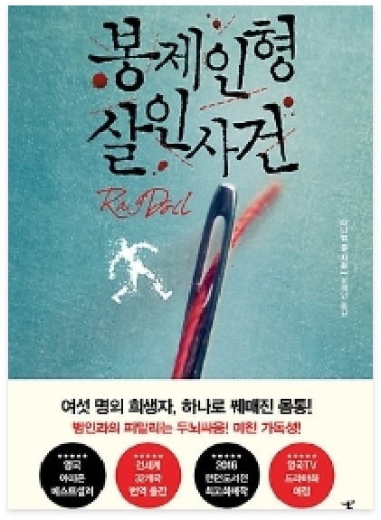

♡
봉제인형 살인사건
-
저자 | 다니엘 콜
출판사 | 북플라자
출판년도 | 2017.10.20
하나로 꿰매진 몸통, 여섯 명의 희생자!
2016년 4월 런던 도서전에서 가장 큰 주목을 받은 다니엘 콜의 데뷔작 『봉제인형 살인사건』. 《데렐 가족》을 히트시킨 ITV사가 TV판권을 획득하며 영국에서 드라마화 제작 확정된 이 작품은 신체의 여섯 부위를 바늘과 실로 꿰매 이어 붙인 살인사건이라는 섬뜩한 소재를 다루면서도 진정한 정의가 무엇인지에 대해 생각하게 만드는 작품이다. -
저자소개
저자 다니엘 콜은 런던 도서전을 통해 영미 현대문학계에 혜성처럼 등단한 신예 작가이다. 2016년 4월 런던 도서전에서 가장 큰 주목을 받은 소설 《봉제인형 살인사건》은 다니엘 콜의 데뷔작으로서 영국, 미국, 독일, 일본을 포함한 32개국에서 출간되었고, 치열한 경쟁 끝에 《데렐 가족》을 히트시킨 ITV社가 TV판권을 획득했다. 《봉제인형 살인사건》은 생동감 있는 묘사, 입체적인 캐릭터, 치밀하고 절묘한 플롯, 반전의 반전을 거듭하는 긴장감 넘치는 구성으로 첫 문장에서부터 마지막 문장까지 단숨에 읽게 만드는 -
출판사 서평
영국 아마존 베스트셀러!
2016년 런던 도서전 최고의 화제작
영국, 미국, 일본, 독일, 러시아 등 주요 선진국 포함 32개국 번역 출간!
영국TV드라마화 제작 확정!
여섯 명의 희생자, 하나로 꿰매진 몸통! 범인과의 피말리는 두뇌싸움! 미친 가독성!
 자세히
자세히
해당 도서는 독서퀴즈 서비스가
제공되지 않습니다.
-
피치못할피치:D2020.09.06.부자가 되기 위해 사소한 습관부터 하나씩 고쳐봐야겠다는 생각이 들었고, 저를 한 번 되돌아볼 수 있는 시간이 되어 좋았습니다^^#존리 #존리의부자되는습관 #부자를꿈꾼다 #부자되기_도전! #로또당첨
-
자두자두졸령2020.09.04.부자되고싶다아아아아아 요즘 티비에 자주 보이시는 존리님! 궁금해서 읽어봤는데, 너무 재밌었어요~#존리 #부자 #독서 #책읽기습관 #저축
-
아네모네세모네2020.09.01.괜히 베스트셀러가 아니네요! 재밌는데 제가 과연 지킬 수 있을지 ㅠ_ㅠ#부자되는법 #부자되는습관 #존리 #책추천